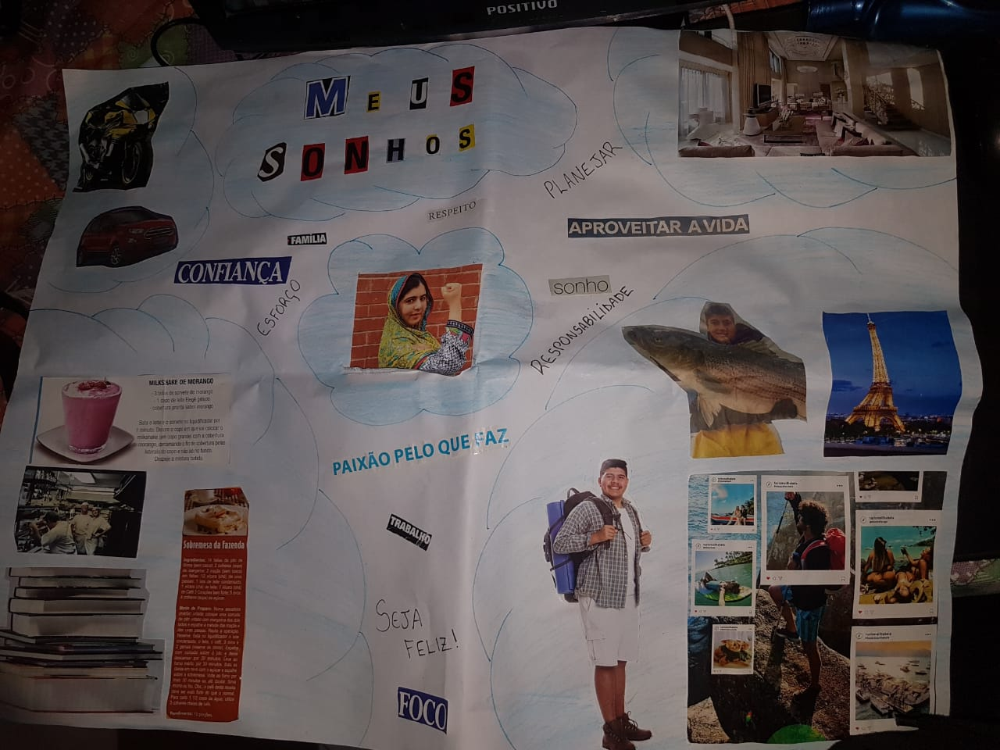

Missão de vida para mim é aquilo que eu preciso fazer para se sentir a pessoa mais realizada do mundo. Eu acho que seria ter minha casa, restaurante montar uma familia e amar e fazer o bem ajudando o proximo com oque que puder
Eu quero superar todas as minhas perspectivas quero ter lealizado algumas conquistase superar obstaculos, enfrentar desafios, pois luto por algo que desejo muito, que é o melhor para minha familia e sempre buscar ajuda-los
Honestidade, respeito, empatia, carater, humildade, etica
fraternidade,comprometimento e compaixão
Ser mais proativo, encontrar motivação, maior controle emocional, cumprir metas.
Acho que preciso de mais tempo, pois eu realmente não estou numa boa fase ou ate mesmo se me conheço.Eu tenho que refletir um pouco e descobrir quais são as minhas ambições.
Melhoras
Autoconhecimento, melhorar comunicação, bloqueios(timidez e insegurança),ter mais empatia e liderança.
Na minha vida eu tenho um bom relacionamento com minha familia e com meus amigos,pois geraldomente são ambientes agregadores e saudaveis para mim.Eu consigo perceber que quando o relacionamento esta mal, sinto que me prejudica afetando minha eficiencia.
1) O que eu faço para fugir do tédio na quarentena. Elaborar um vídeo em dupla com esse tema.
2) Elaborar uma lista com 10 motivos para ser feliz.
R: Jogar videogame, jogar basquete, Minha familia, Meus cachorros, Comer, Role com os amigos, animes e series, ouvir musica, dormir, todo final de semana reunido com a familia.
a) Minhas crenças sobre a vida. Responda: o que você acredita sobre a vida?
R:Criamos nossas experiencias, nossa realidade e tudo que há nela. Quando temos paz, harmonia e o equilibrio em nossa vida, se voce convive com pesooas felizes, aprende muitas coisas positivas.
b) Em que acredito. Responda: o que você acredita sobre você mesmo?
R:Eu acredito que sou capaz de fazer tudo, porque eu sempre termino oque começo, e sempre quero mais, existe algo unico em mim isso faz quem eu sou, a minha essencia e tudo oque eu preciso para ser feliz.
c) Meus valores inegociáveis. Responda: o que é realmente importante na vida para ser feliz?
R:familia, Saude, estudos e metas novas sempre para cumprir.
d) Meus Sonhos e minhas metas. Faça uma lista objetiva com os sonhos e os prazos para que sejam realizados.
R:Faculdade, Ter uma familia, comprar uma casa, carro, Saude, Ter meu restaurante.
a) Pense nas limitações para atingir as metas propostas para seus sonhos e escreva o que você pode fazer para reduzi-las ou eliminá-las.
R:Fazer exericios fisicos, me esforçar ao maximo, trabalhar bastante, estudar , praticar.
b) Como você reage quando não consegue realizar algo?
R:Eu fico frustrado e paro, dou um "pause" para mim e vejo oque deu errado e o porque ele deu errado.
c) Para cada meta, qual é a sua nota de comprometimento com a realização dos seus sonhos, de 0 a 10. Justifique.
R:Eu daria nota 5, acho que esse ano fiquei um pouco para tras, as coisas não aconteceram como o esperado, mas creio que irei conseguir realiza-los.
5) Quadro dos sonhos: faça uma representação visual de tudo aquilo que você almeja, seus sonhos, através de uma produção artística (colagem, pintura, desenhos) e grave um vídeo apresentando o quadro. Este quadro ficará para sempre na sua página web para rever quando quiser. O "rever" é tanto para recordar quanto para alterar quando desejar. A vida muda e os sonhos também.

6) Eu daqui 10 anos... Estou em 2030. Como estou financeiramente? Como se compõe minha família? Quais profissões seguiram?
R:Hoje acordei cedo, arrumei minhas filhas para a escola, a mais velho se chama giovionna e a mais nova se chama heloa, deixei elas na escola, no camnho do trabalho, ja conquistei, carro dos meus sonhos e minha casa junto da minha esposa.
Um dos meus maiores sonhos que hoje esta pronto e funcionando e meu restaurante GERALD'S Que fica no japão e vivo muito bem. Me mudei do brasil a 5 anos, pois queria uma qualidade de vida melhor para minha familia, mesmo com tanta coisa para fazer estou cursando biologia para que trabalhe com animais, estou contruindo um canil para resgatar animais que precise de ajuda.
1) Elabore um vídeo em grupo com o tema ""Negócios e trabalhos do futuro" falando sobre as formas de empreender durante a pandemia e depois dela passar.
2) Pensando o protagonismo juvenil, empreender e empreender a si mesmo.
3) O QUE É UM PROTAGONISTA?
R: No Protagonismo Juvenil o jovem é sempre o ator principal em ações que dizem respeito a problemas concernentes ao bem comum, na escola, nos grupos sociais, nas comunidades de bairro, ou na sociedade de maneira geral. ... Protagonista quer dizer, então, lutador principal, personagem principal, ator principal.
4) EM QUE SITUAÇÃO VOCÊ É PROTAGONISTA NA SUA CASA?
R: a todo o momento eu faço tudo em casa.
5) Pensando a comunidade em que você vive e a sociedade como um todo, Responda:
6) VOCÊ PARTICIPA DE ALGUM MOVIMENTO SOCIAL, RELIGIOSO OU CULTURAL? EXPLIQUE QUAL É O TRABALHO QUE VOCÊS REALIZAM.
R: eu participo do Sonhar acordado
7) O QUE VOCÊ PODE FAZER PELA SUA SOCIEDADE/COMUNIDADE? R: não quero ajudar em nada
8) Faça um vídeo em grupo simulando um processo seletivo e dando dicas de elaboração de um currículo.